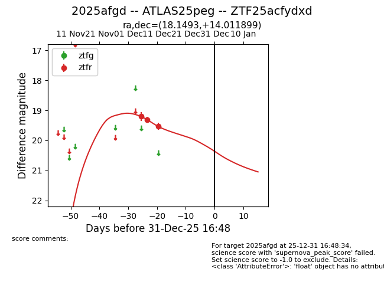
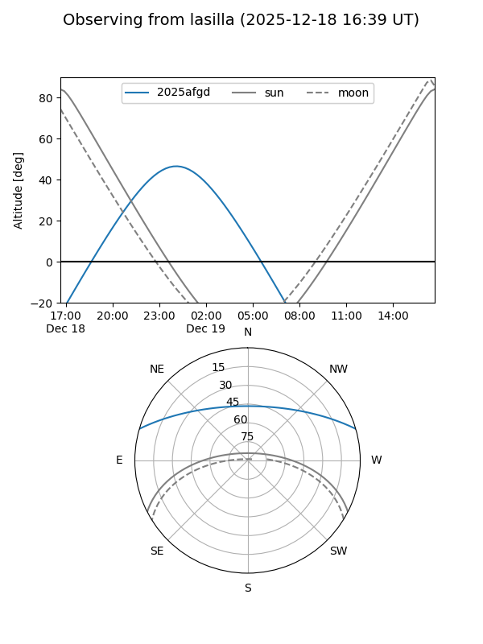
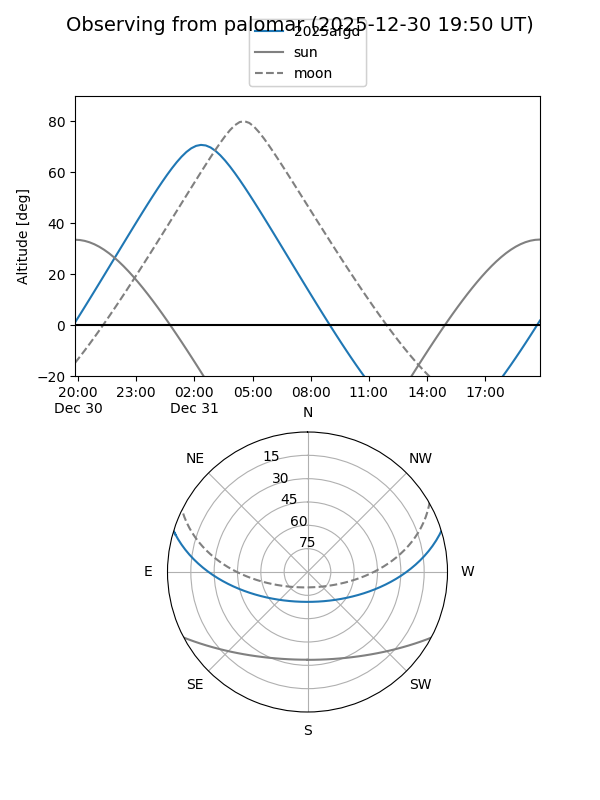
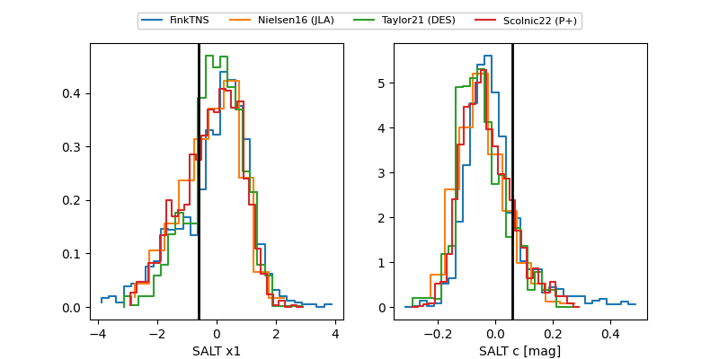

2025afgd
Target 2025afgd at 2025-12-31 16:59
Aliases and brokers:
FINK:
Lasair:
ALeRCE:
TNS:
YSE:
alt names
ZTF25acfydxd (ztf,fink_ztf)
2025afgd (tns,yse)
ATLAS25peg (atlas)
Coordinates:
equatorial (ra, dec) = 18.1493,+14.01190
equatorial (HMS+DMS) = 01:12:35.84,+14:00:42.84
galactic (l, b) = (130.6966,-48.54059)
Flags:
Photometry:
last ztfr=19.54
3 ztfr detections
Lightcurve

Visibility


Additional plots
